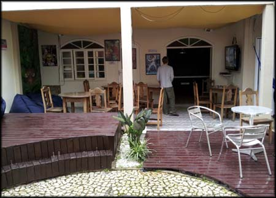
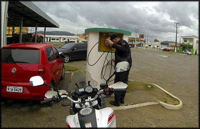
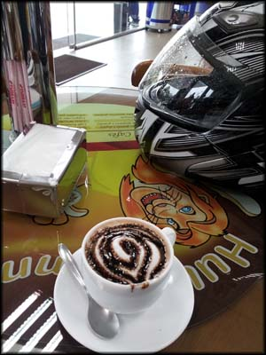
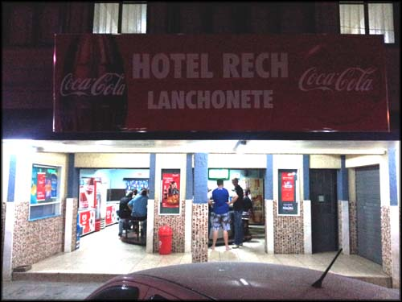
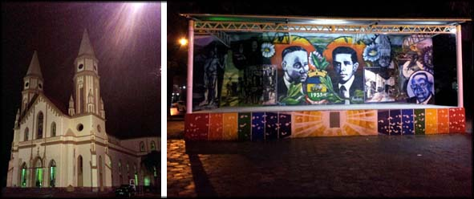
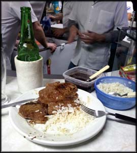

Acordei no Hostel Lagoa em Florianópolis, e desci para pegar o café da manhã, por volta de 08:00h. A variedade era bem limitada, mas estava bom. Pão de forma, queijo e presunto, uns bolos e suco. Fiquei batendo papo no meu inglês capenga com um cara da Finlândia que estava lá por uma semana para conhecer a cidade, e depois iria alugar um apartamento, pois ele e sua noiva iriam estudar por um ano na Universidade de Santa Catarina. Gente fina o cara.
Mas depois chegou uma linda menina que me tirou toda a atenção, e eu até esqueci do papo com o gringo rs. Ela falava em português com um sotaque disfarçado, daí perguntei de onde era. Ela disse que era do Uruguai e morava em Florianópolis há uns dois anos. Ora, que legal, eu planejava talvez chegar até lá nessa minha viagem sem destino certo. Me deu umas dicas de lugares para visitar no país vizinho. O gringo cansou de tentar entender nossa conversa em português e foi dar uma volta.
[caption id="attachment_247" align="aligncenter" width="450"] Quintal nos fundos do Hostel Lagoa, tem até um ofurô, as festas devem ser doidas. Ao fundo o gringo finlandês gente boa.[/caption]
Acabou o papo, subi pro quarto, e pratiquei o ritual de colocar toda a bagagem nos alforges, amarrar na moto, e voltar pra estrada.
Caía uma chuva bem fraquinha e estava calor, já saí com roupa de chuva suando. Depois eu iria constatar que seria mais um de de viagem sem fotos, por causa da chuva chata.
Saí da ilha facilmente, porque sabia rodar por lá, mas para sair da cidade e pegar a BR foi um sufoco. O trânsito não estava muito pesado, mas os motoristas dificultavam o fluxo bom. Alguns querendo voar, outros devagar quase parando... errei a entrada, me perdi, pedi informação, vi o GPS do celular... depois de algum sufoco e de ter ficado puto várias vezes, consegui voltar à estrada.
Segui pela BR-101, e abasteci em Imbituba/SC (1.410 Km rodados) por volta de 14:30h. Aproveitei e almocei em uma comida a quilo no posto de gasolina mesmo. E fui conferir uma enorme loja de roupas que também fica no posto, e espalhou propaganda em outdoors por quilômetros da estrada em que eu vinha, me deixando curioso. Mas não tinha nada que prestasse. Eu planejava comprar roupas durante a viagem, mas até agora só tinha visto porcaria. Como fiquei um bom tempo por lá, aproveitei que a borracha do pneu da motoca esfriou e mandei uma calibragem.
[caption id="attachment_246" align="aligncenter" width="400"] Calibrando os pneus da Monstrinha em Imbituba/SC[/caption]
Voltei a rodar, e segui mais, passando ao lado da Lagoa Mirim, belíssimas paisagens, estrada boa, moto não paga pedágio... ufa! Finalmente um pouco de bom senso. Até que na altura de Capivari de Baixo/SC uma obra gigantesca na estrada engarrafou tudo. Muitos caminhões. Muitos mesmo.
Fiquei um tempo parado no engarrafamento, em dúvida se ia cortando o trânsito ou não... essa regra eu segui durante toda a viagem. No Rio de Janeiro e em São Paulo eu conheço, e circular com a moto pelo meio do corredor de carros é normal, mas a cada cidade, principalmente as menores, eu tentava perceber primeiro como os motociclistas faziam para não ter problemas.
Até que chegou uma hora que eu perdi a paciência com o anda e para sob chuva, joguei no acostamento e fui progredindo devagar, fazendo pequenas sessões de off road pela pista em obra, até que ultrapassei toda a fila de carros e caminhões e voltei a rodar bem de novo.
Cheguei em Tubarão/SC, consultei o GPS do celular e subi em direção a Grão Pará. No caminho, parei para abastecer na entrada de Braço do Norte/SC (1.490 Km rodados), apesar do tanque estar bem cheio, e fui pegar umas dicas com os frentistas.
Perguntei por hospedagem, pelos caminhos para a Serra do Corvo Branco, Morro da Igreja, Rio do Rastro... eles sabiam menos do que eu !! E era muito comum quando procurava me informar: a maioria das pessoas nunca sequer saiu dessas pequenas cidades onde nasceram, muitas vezes nem para a cidade vizinha!
Fui beber um café na loja de conveniência (o qual descobriria posteriormente que seria meu almoço) e vi lá fora todos os frentistas cercando minha moto, curiosos. Saí para bater papo, e me perguntavam se a moto era 600 cilindradas ou mais. Menos, eu disse, é uma 250. Ninguém acreditava rs. Achei engraçado, porque naquela região vai muita gente passear de moto - pelo que vi na internet, não deveriam se espantar com uma simples Ténéré 250.
[caption id="attachment_248" align="aligncenter" width="300"] Um capuccino no posto de gasolina, para recuperar a dignidade[/caption]
Acabei o café, e segui para dentro de Braço do Norte, passando pela cidade e tentando chegar em Grão Pará. Nesse dia foi chuva o dia todo. E não tinha parado. Vi uma placa indicando Grão Pará adiante. Fui seguindo devagar, não vi outra placa (não existia na verdade), e mantive a direção. Rodei por um bom tempo por uma estrada bem estreita, mas com asfalto muito bom, até que cheguei em outra cidade. Rio Fortuna/SC. Não entendi nada. Fui pro lugar errado? Certamente.
Rodei um pouco pela cidade, parei, olhei no mapa do celular... fiz merda haha. Decidi voltar tudo, chuva, frio, muitas curvas, velocidade baixa... cheguei de volta em Braço do Norte já escurecendo. Logo que entrei de novo em Braço do Norte vi a placa apontando Grão Pará/SC para a direita. Putz. Faltava a sinalização no sentido que eu tinha ido, mas voltando, lá estava ela. Lamentável.
Bom, já estava cansado, e resolvi procurar hospedagem ali mesmo. Vi um hotel em frente à praça que me pareceu ser a principal da cidade, porque tinha uma igreja e um coreto. “Rech Palace Hotel”. O nome é chique, mas era apenas um prédio com um botequim em baixo. Fui perguntar no boteco, e um senhor me atendeu, e disse que o hotel era ali mesmo com ele. Já imaginando o nível do quarto, perguntei o preço. R$ 45,00.
[caption id="attachment_249" align="aligncenter" width="500"] Botequim do Hotel Rech. O prédio em cima é o hotel/hospedagem.[/caption]
Pedi pra ver o quarto, e achei bacana. Me surpreendeu, era limpo, e as mobílias apesar de velhas, estavam em bom estado. E tinha internet por WiFi, ainda que precária. Resolvi ficar.
Coloquei a bagagem para secar espalhada pelo quarto, naquele ritual de sempre. Era o terceiro dia de chuva o dia todo. Os alforges inundavam e eu tinha que virar a água como se fossem baldes.
Tomei um banho e desci para explorar a cidade. No Botequim estava passando futebol, como não era meu time, resolvi caminhar pelas ruas. Continuava uma chuva fina, e agora estava frio demais pra um carioca rs. Todas as lojas fechadas, mas só com portas de vidro. Não é como no RJ que se fecha a loja com portas de ferro reforçadas, alarme, segurança e o escambau. Lá só fecha a porta da vitrine, coloca plaquinha de "Fechado", e pronto. Outro nível!
Não se avistava viva alma pelas ruas. As poucas pessoas que passavam por mim me olhavam como se eu fosse um alienígena. Cidade pequena, todo mundo se conhece, né, já percebem logo quando alguém é de fora.
[caption id="attachment_250" align="aligncenter" width="591"] Igreja e Coreto na praça em Braço do Norte. A igreja ficaria bem cheia na hora da missa.[/caption]
O único movimento de pessoas era para a missa na igreja da praça. Voltei pro botequim/hotel, tinha cerveja Heineken, oba! Bebi algumas vendo o futebol na TV, e comi um bife com arroz e feijão gastando uns R$ 30,00 no total. O bife foi feito na hora, mas o arroz e feijão requentados no microondas em postes plásticos, bem louco. O sabor não era dos melhores, mas alimentou, isso que importa.
[caption id="attachment_251" align="aligncenter" width="270"] Janta esquisita no botequim do Hotel[/caption]
Tentei puxar conversa com outros caras que estavam no bar (é, só tinha homem), perguntando sobre as atrações locais e caminhos, mas ninguém era muito de conversar e também não sabiam de nada de Rio do Rastro ou qualquer coisa turística. Ali parecia ser uma cidade bem de passagem, de quem viaja a negócios ou coisas do gênero, sei lá. Então desisti de pegar informações, e fui dormir e me preparar pro dia seguinte, estudando melhor o mapa para não passar tempo me perdendo de novo.
Finalmente eu iria passar pela Serra do Corvo Branco e tirar uma foto clássica daquela parede de pedras cortada pela estrada, que eu tinha visto em todos os álbuns de fotos de motoviajantes.
Será?
---------- Comentários são bem vindos, inclusive dúvidas que eu saiba responder. Por questão de organização, comentários sobre a viagem ao Uruguai estarão concentrados no primeiro artigo que pode ser acessado aqui: Viagem de Moto do Rio ao Uruguai – Apresentação. Obrigado pela vista!